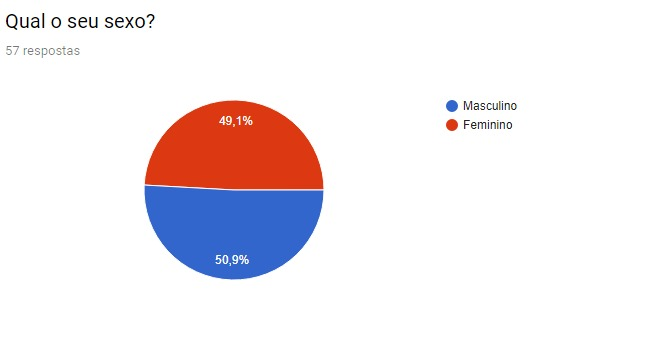
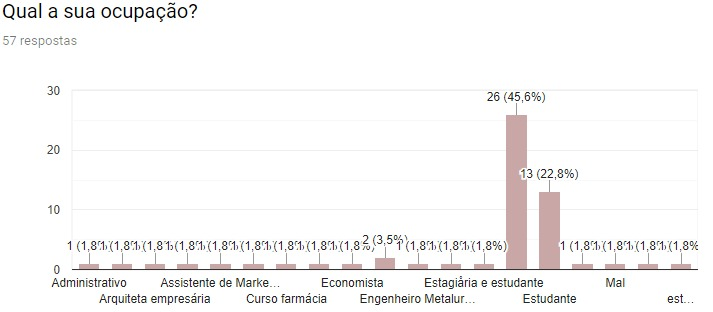

Para definir um publico que gostam de "assar uma carninha","encher o bucho de carne" e "comer ate passar mal",ou seja, fazer um churrasco. Foi realizada uma pesquisa via Google forms durante o mes de Novembro. Fico feliz em finalmente poder mostrar os dados da nossa pesquisa.
Como foi feita a pesquisa
A pesquisa foi feita a partir do Google forms, obtendo no final, a participacao de 57 pessoas.Na primeira parte da pesquisa fizemos as seguintes perguntas com o intuito de extrarir informacoes dos consumidores para no final decidir o rumo da pesquisa "Qual o seu sexo?,"Qual sua ocupacao ?" ,"Voce sabe fazer churrasco?","Voce realiza/participa de umchurrasco quantas vezes por mes?" Com isso sabemos que das 57 pessoas 50.9% sao participantes masculinos e 49.1% femininos. Foi uma grande surpresa ver que a quantidade de mulheres e homens sao quase as mesas sobre o interesse da pesquisa. Alem de que os empregos das pessoas sao bem diversificados, mas ainda assim em grande maioria a ocupacao com maior rnumeros de pessoas foram estudantes , sao certa de 45,5%.
 Podemos ver no grafico que apesar da grande mioria das respostas forem de estudantes, tambem houveram pessoas com outras ocupacoes e isso e importante ja que e nosso objetivo delimitar as pessoas que responderam por nichos.
Como obtivemos respostas ate de pessoas que nao sabem fazer churrasco mas gostam de participar de um ,tambem conseguiremos um diferente ponto de vista quanto a fazer churrasco.